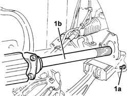

2710A30 INTERMEDIATE DRIVE SHAFT - R.R. with right driveshaft removed
- Path
- Procedures > 27 AXLE > 2710 FRONT AXLE > 2710A DRIVESHAFTS AND JOINTS > 2710A30 INTERMEDIATE DRIVE SHAFT - R.R. with right driveshaft removed
- Kind
- repair procedure (removal / refitting; the operation number is the code)
- Applies to
- all engines; all production periods
- Interactive page
- https://sloeber94.github.io/elrnDB-lThss/en/#/78460
Applies to: all engines; all production periods
 Removing
Removing
 Refitting
Refitting1. Undo the bolts (1a) fixing the intermediate driveshaft to the support, then remove the intermediate driveshaft (1b) complete with sliding joint.

Applies to: all engines; all production periods
Refitting
Removing- Check that the intermediate driveshaft is intact.
- Fit the intermediate driveshaft in the housing in the support.
- Tighten the bolts fixing the intermediate driveshaft to the support.